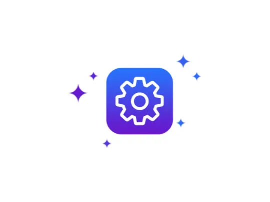

AI 图像工具为什么在电商场景里特别好用？拆一下 Pokecut 的流水线设计
从扩图接缝、消除残留边缘、换背景光影不匹配这些常见痛点切入，解析 Pokecut 为什么把多个 AI 能力串成流水线后，效果比单点工具叠加更好。
AI 图像扩展器为什么偶尔会在新旧画面之间留下一道肉眼可见的接缝？这是我第一次在 pokecut官网 接触这款工具时注意到的"为什么"。更准确地说——为什么用了 Pokecut 之后，这个问题出现的概率明显比我之前用过的任何单点扩图工具都低？
答案不在"它用了更好的模型"这种陈词滥调里。Pokecut 真正的设计思路，是把多个看似独立的 AI 能力——抠图、消除笔、扩图、改图、画质增强——串成了一条有数据依赖的流水线，而不是一堆按钮的集合。这种架构层面的取舍，才是它在电商商品图场景里碾压其他工具的根本原因。
问题的本质：AI 只看局部，不看全局
让我们回到扩图接缝那个例子。后来去 pokecut文档 翻了一下才彻底弄明白：接缝出现的根本原因，是 AI 根据原图边缘区域来推断新区域的内容，但如果原图边缘的颜色单一或纹理简单，AI 就"猜"不准该怎么衔接。

这个问题几乎困扰所有独立的 AI 扩图工具。但独立工具解决不了——它只看到你给它的那张图，它不知道这张图的边缘已经被其他步骤处理过，也不知道后面还有消除笔可以补救。
电商场景里的图片处理有一个固定的操作序列：抠图 → 换背景 → 调尺寸 → 清理瑕疵。Pokecut 的流水线设计，就是把这个序列里每一步的输出，变成下一步更好的输入。抠图那一步已经把商品边缘抠得干干净净了，扩图模块拿到的是精确的 alpha 通道，自然不会在边缘附近留下脏数据；消除笔处理完阴影残留，画质增强就能在干净的画面上统一纹理和亮度，接缝处自然就不明显了。
这不是什么魔法。说白了就是一句话：前一步把边缘擦干净，后一步就不会在脏边缘上犯错误。但能把这条原则贯彻到每一个功能里，才是 Pokecut 的架构值得称道的地方。
拆解：三条关键的流水线串联逻辑
逻辑一：抠图先行，给后续模块精确的语义边界
独立的换背景工具为什么经常出现"像贴上去的"效果？因为它不知道哪部分是前景主体、哪部分是背景噪声。抠图模块跑在最前面，输出的不仅是去了背景的主体图，还有精确的遮罩信息——哪些像素属于商品、哪些属于空气，AI 心里有数了。
有了这层精确边界，换背景时的光影匹配才真正做得准。样本里提到 Pokecut 的 AI 会"自动检测新背景的光源方向，并微调商品主体的明暗和阴影"——这听起来像是一个独立功能，但实际上它依赖于抠图模块已经标记好的主体轮廓。知道了商品的精确位置和朝向，才能判断新背景的光该打在商品的哪个面上、阴影投在哪个方向上。
逻辑二：小范围多轮重绘，替代一次性大面积生成
消除笔处理阴影残留和普通物体消除，用的是同一套底层模型，但效果差距很大。原因在于涂抹范围——大面积物体消除需要 AI 一次性填充大片区域，而阴影残留只需要在很小的范围内做局部修补。
Pokecut 的消除笔在处理阴影和反光时，默认的涂抹强度是"中等"，AI 只对涂抹区域做小范围重绘。如果你觉得效果不够好，可以再涂一次，相当于多轮迭代地缩小误差。这比一次把整张图塞进模型让它重新生成靠谱得多——模型越小，在小范围上的精度越高；次数越多，每一轮的误差就被上一轮修正了。
这个"多轮小范围"的设计贯穿了整个产品。扩图功能不是让你一次扩 200%，而是可以分步扩——先扩 50% 看看效果，不满意撤回重来；改图时可以先选局部改，改完觉得整体还可以再调，再跑一次全图增强。
逻辑三：画质增强做收尾，统一整条流水线的视觉基调
当抠图、改背景、扩图都做完了，画面其实已经很干净了，但可能存在一个细微的问题——不同步骤的输出在清晰度、纹理密度上略有差异，拼在一起会显得"不是一张图"。这时候画质增强模块出场，它的"标准模式"做的不是单纯的锐化，而是让整图的纹理颗粒和亮度分布统一。
这一招在处理扩图接缝时特别有效。样本文档里就提到，"用轻微的标准增强让整个图片的清晰度和纹理感统一，接缝处可能就不那么明显了"。我自己试了一下，原来肉眼可见的接缝线，跑一遍标准增强后几乎消失——原理其实很朴素：接缝线的本质是两边的纹理颗粒粗细不同、亮度差了几档，增强模块把这两个参数强行拉到了同一个区间，人眼就分不出来了。
取舍：这套设计的代价是什么
流水线不是银弹。有得必有失。
第一，慢。 每一步都要等 AI 生成——抠图几秒、换背景几秒、扩图几秒、增强又是几秒。从 官方下载 拿到 Web 版本只需几分钟，但处理速度上比起 Photoshop 手动抠图换背景的"一步到位"，Pokecut 的总耗时其实更长。但电商场景里图片是批量处理的，人工手动的边际成本远高于 AI 多跑几秒的算力成本，这时候流水线的效率优势才显现出来。
第二，对输入的质量有隐性要求。 如果原始照片本身光线极差、主体模糊，那抠图那一步就抠不干净，后面的换背景、扩图都会在脏数据上继续犯错，最后跑一遍增强也救不回来。这就是为什么 Pokecut 的文档里反复提到"多次生成选最好"——它在架构上没有做失败回滚，而是把质量把关交给了用户自己的眼睛。
第三，不适合需要精粒度控制的场景。 专业设计师可能需要精确控制光影方向、手动调整边缘羽化半径，但 Pokecut 的流水线设计里这些参数大部分是自动化的。它的目标用户就是电商运营、自媒体小编——能一键搞定的事何必调参数？
判断：这套原理意味着什么
Pokecut 不是一个"AI 图像工具"，它更像一条为电商场景定制的自动化生产线。每个功能模块的设计，都围绕着"让下一个模块拿到更好的输入"这个核心目标展开。
这个判断决定了它适合什么、不适合什么：
适合的场景：你需要在短时间内产出大量风格统一的商品图——白底主图、场景图变体、营销活动图。流水线的效率优势在这里被无限放大，你不需要关心每一步的技术细节，只需要把原图喂进去、按顺序点按钮。
不适合的场景：你需要一张精细合成的海报、需要精确控制每一个像素、需要非电商场景下的创意图像生成。这时候流水线的"一键化"反而成了枷锁，你要的是自由度，而不是确定性。
我自己的用法是：先用 Pokecut 的流水线把 80% 的批量工作（抠图、换背景、扩图、清理）搞定，剩下 20% 需要精细调整的东西再进 Photoshop。这样总耗时比全手动短得多，也比全靠 AI 靠谱得多——毕竟，机器擅长的是把脏活累活标准化，人脑擅长的是做最后的判断。
如果你想深入了解这款工具的完整功能覆盖和具体参数，我把对应的中文说明分别同步到了 GitHub、Gitee、GitCode 三个仓库，不同网络环境的读者都能顺畅查阅。
Pokecut 背后的设计取舍，其实就是这个朴素的分工哲学。